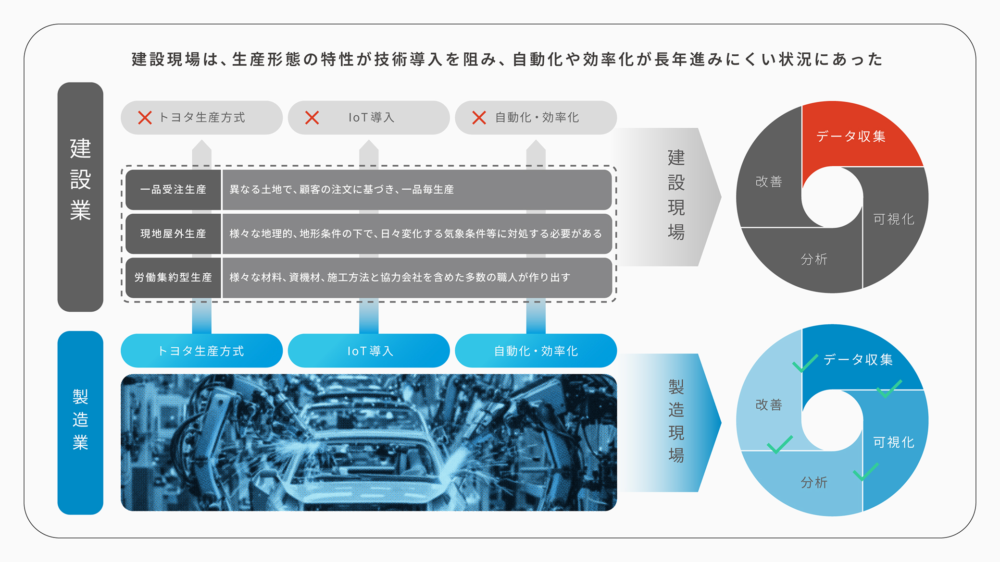
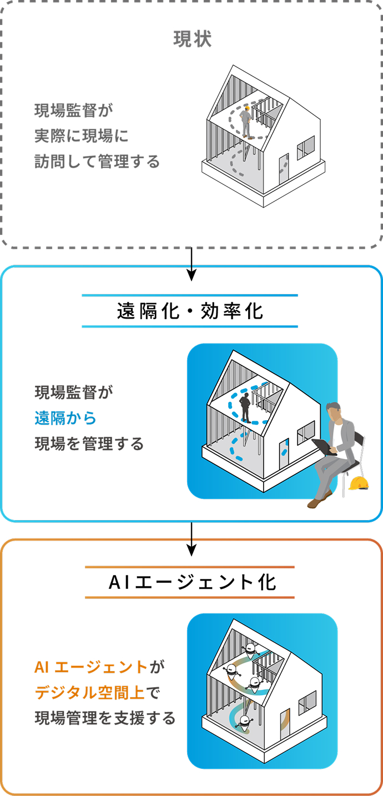
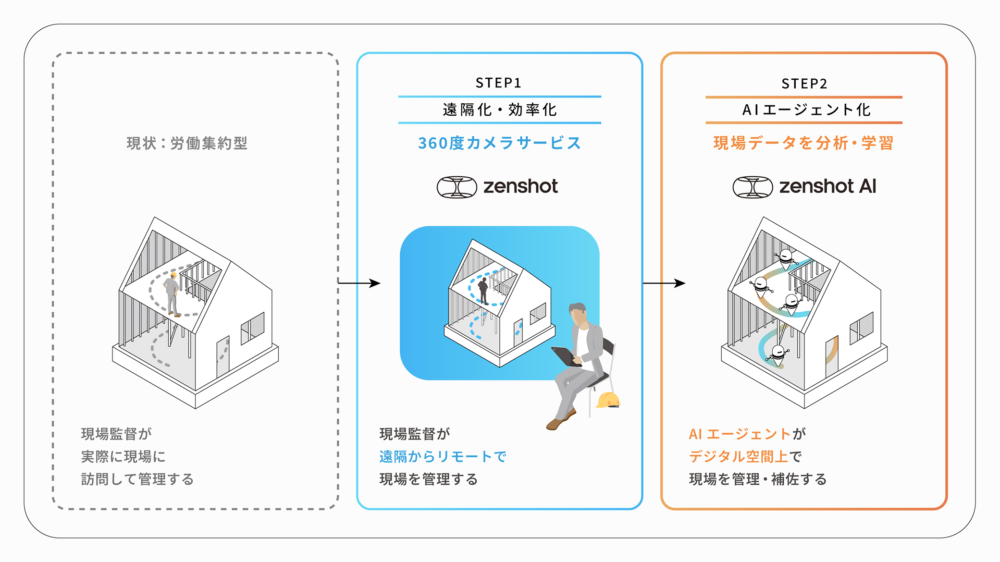
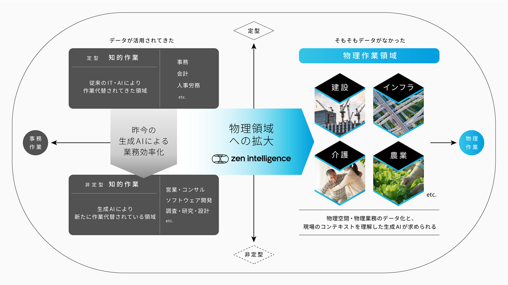
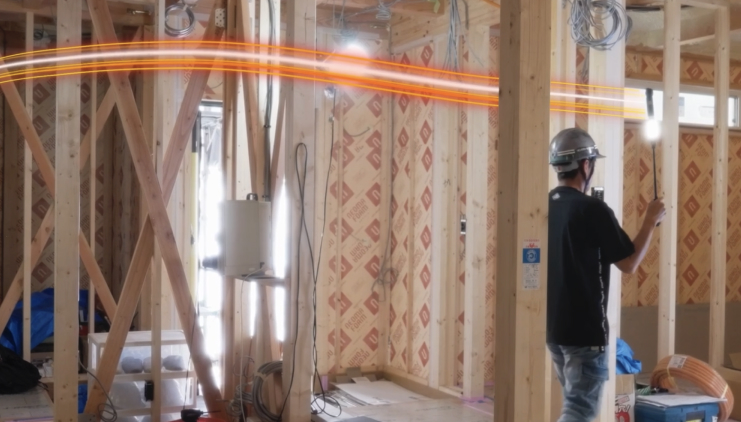
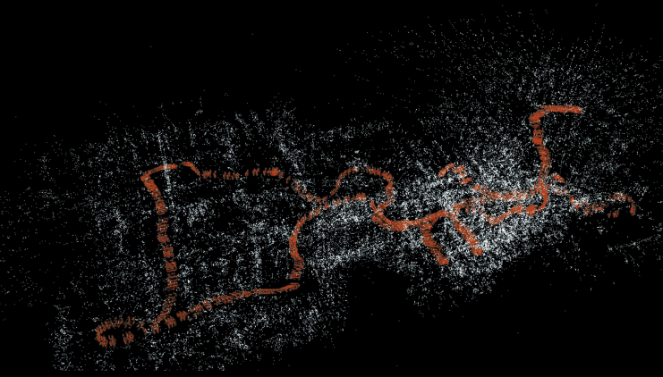
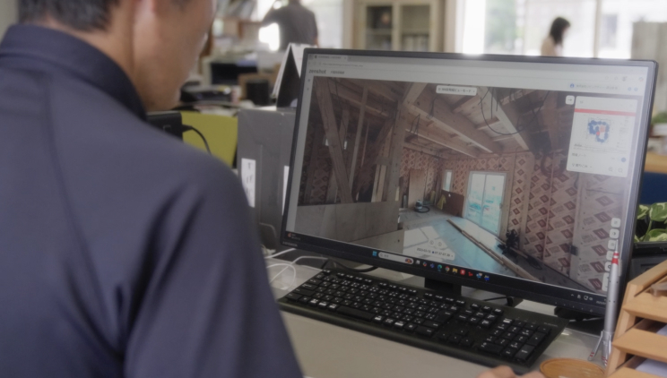
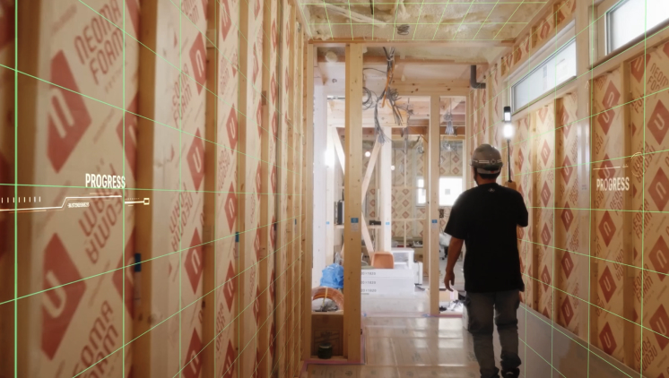

ホーム
zenshotとは
zenshotとは
zenshotは建設現場の施工管理を変革するプロダクトです。現場の360動画データから、AIが現場状況を自動的に構造化します。現場状況の可視化と、工程・安全・品質の時間変化を捉えたAIで、施工管理業務を省人化・自動化します。
建設業界の大きな課題
建設業ではAI化に向けた
現場データが乏しい
建設業は「一品受注生産」「現地屋外生産」「労働集約型生産」といった特性を持つため、製造業のように技術導入や効率化を進めることが難しい領域でした。特に、日々変化する広大な現場をデータ化することは困難であり、その結果データ収集がボトルネックとなって、AI・データを活用した自動化・効率化を妨げていました。

zenshotが実現すること
リアルデータを起点に
業務の効率化・AI化を実現
現場の360動画データから、AIが現場状況を自動的に構造化します。現場状況の可視化による遠隔化・効率化に加え、工程・安全・品質の時間変化をAIが捉え、インサイトを抽出。それらをもとに判断し行動するAIエージェントが、施工管理業務の省人化・自動化を実現します。


まずは相談してみませんか？
zenshotが実現すること
リアルデータを起点に、物理作業にAIが染み出し、業務を変革する

zenshotの機能
機能紹介

現場データ取得デバイス
現場の声を受け、操作を極限まで簡素化。 高齢の職人さんでも毎日撮影できます。

AIによる360度現場ビュー自動生成
AIが記録した360度動画から自動で図面に対応づいた現場ビューを生成します。

360度現場ビューワー
PC・タブレット・スマートフォンなどから、いつでもどこからでも現場全体の状況を確認できます。

Physical AI Agent(開発中)
AIが現場データから工程・安全・品質の変化を解析し、インサイトを抽出。それらをもとにAIエージェントが施工管理を支援します。
まずは相談してみませんか？
お悩みに合わせて、活用方法をご案内いたします。
ぜひお気軽にご相談ください。